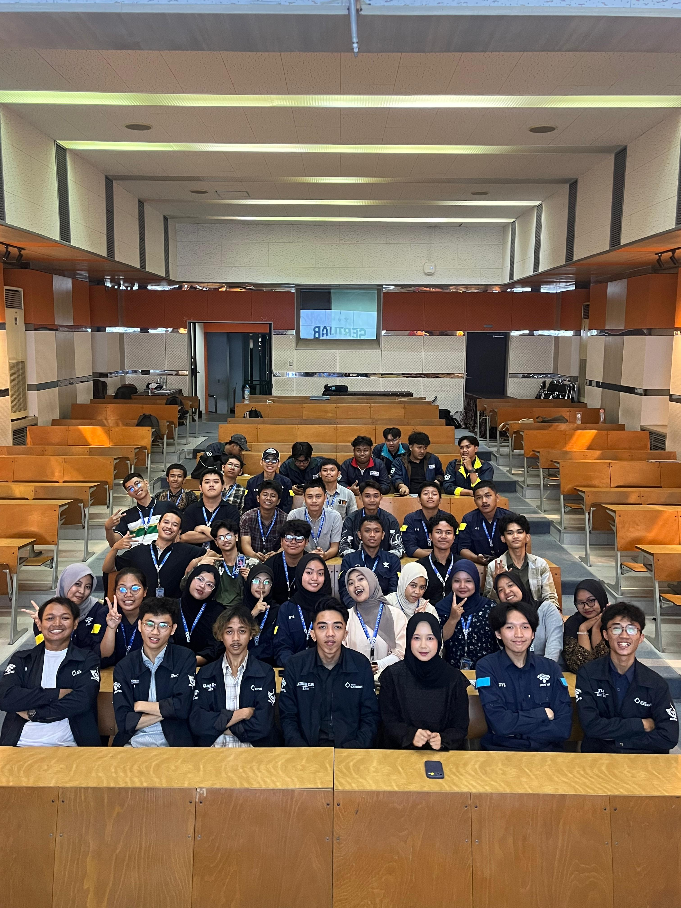

7
Komisi Aktif
30+
Anggota DPM
20+
Program
PERIODE
2025-2026
TENTANG KAMI
Apa itu DPM PENS?
DPM PENS merupakan lembaga legislatif mahasiswa yang berfungsi sebagai wadah aspirasi, pengawasan, dan penghubung mahasiswa dengan pihak kampus.
DPM PENS merupakan lembaga legislatif mahasiswa yang berfungsi sebagai wadah aspirasi, pengawasan, dan penghubung mahasiswa dengan pihak kampus.
Dewan Perwakilan Mahasiswa Politeknik Elektronika Negeri Surabaya — lembaga legislatif yang hadir untuk mewakili suara seluruh mahasiswa PENS.
DPM PENS adalah lembaga legislatif mahasiswa di lingkungan Politeknik Elektronika Negeri Surabaya. Sebagai representasi demokratis seluruh mahasiswa, DPM PENS memiliki fungsi legislasi, pengawasan, dan advokasi.
Aspek Trias Politika KM PENS, DPM berperan menjaga keseimbangan kekuasaan antar lembaga dan menjamin hak-hak mahasiswa terpenuhi secara konstitusional.

Terwujudnya DPM PENS sebagai lembaga legislatif yang berdaulat secara konstitusi dan progresif dalam aksi demi stabilitas Trias Politika serta kemajuan KM PENS.